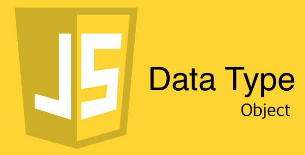
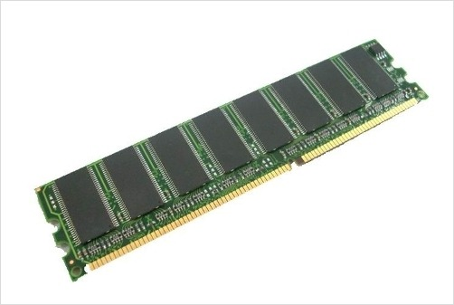

자알쓰란?
자바스크립트 알고 쓰자. (잘 쓰자는 의미도 담겨있다.)
자바스크립트라는 언어 자체는 내 기준에서는 설계 상 미스가 참 많다.
함수 단위의 스코프, 호이스팅, 동적 타입 등등
자바와 같은 깐깐(?)한 언어를 배우고 바라본 자스는 허점 투성이처럼 보였다.
애초에 자바스크립트는 어떠한 프로그램을 만들기 위해서 탄생했다기 보다는
웹 페이지에 입력값에 대한 유효성 검사(데이터가 공란인지 아닌지 등등)와 같은
페이지의 동적 제어가 주된 목적 + 짧은 개발 기간(넷 스케이프 사의 새로운 브라우저에 탑재 예정) 때문에
설계 상에 미스가 있을 수 밖에 없다고 나는 생각된다.
일종의 안전 장치가 없어서 개발자가 일일이 구현해주고, 신경써야 하는 느낌이었다.
그렇다고 해서 자바스크립트를 극혐하거나 그런 것은 아니고 매우 사랑한다.
또한 그 허점을 아는 사람은 허점을 보완해서 요리조리 피해서 잘 쓰겠지만…
잘 모르는 부분들은 잘못 써도 동작이 잘 되기 마련이다.
이는 지금 당장에는 큰 문제가 안 될지 모르겠지만, 추후에 대규모 웹 어플리케이션을 만들거나
직면할 문제로부터 미리 해방시키기 위해 처음부터 좋은 습관을 들여가는 것이 좋다고 생각한다.
그 열 번째 시리즈는 자료형 중에 객체를 주제로 진행하겠다.
자료형
0과 1로 이루어진 데이터를 메모리에서 꺼내서 써야하는데 어떻게 해석할지를 결정하는 유형.
나는 위와 같이 이해하고 있는데 잘 이해가 가지 않는다면 그냥 넘어가도 무방하다.
더 딥하게 알고 싶은 사람은 정적 타입의 언어(C, Java 등등)을 공부해보자.
자바스크립트에서 자료형은 크게 두 가지로 나뉜다.
하나 하나 파헤쳐보자.
객체(Object)
객체는 다음과 같은 유형이 있다.
이번 글에서는 해당 내용들은 다루지 않고, 객체의 특성에 대해서만 다루도록 하겠다.
- 객체
- 배열
- 함수
- 정규 표현식
- 날짜
- 컬렉션(ES6에서 생김)
- 기타 등등
그리고 이 객체에는 다음과 같은 특징이 있다.
- 변하는(Mutable) 값이다.
- 값으로써 비교하는 게 아니라 참조하는 주소로써 비교한다.
- typeof 연산자로 구분하기 어려운 경우가 많다.
- 프로퍼티의 추가가 가능하다.
|
|
참조 타입(Reference Type)
1번과 2번의 특징과 같이 작동하는 이유는 객체는 참조 타입이기 때문이다.
그럼 뭘 참조하느냐? 바로 메모리 주소를 말한다.

기본적으로 우리가 작성한 프로그램(그 안에 존재하는 모든 소스 코드 및 변수 등등)은 메모리에 있어야한다.
메모리는 8GB 등등 다양한 용량을 가지고 있고 그 안에 우리의 변수가 여기 저기 산재돼있는 구조이다.
이렇게 코드를 짰다고 하면 사실은 아래와 같다고 보면 된다.
0x1234 와 같은 메모리 주소는 내가 임의로 지정한 것이다.
절대로 저런 식으로 메모리가 생기지 않았고, 이해를 돕기 위해 쉽게 설명하고자 적은 거다.
| a | b | c | d | 0x1234 |
|---|---|---|---|---|
| 2 | 2 | 0x1234 | 0x1234 | [1] |
즉 변수 c와 d에 [1]이 직접 저장되는 게 아니라 배열은 객체이고, 객체는 참조 타입이므로 메모리의 주소가 각각 저장되는 것이다.
메모리의 주소를 참조하는 형태가 바로 참조 타입니다.
그럼 아래와 같은 경우에 한 번 어떻게 값이 변하는지 보자.
2번 라인까지 하면 아래와 같을 것이다.
| a | b | 0x1234 |
|---|---|---|
| 0x1234 | 0x1234 | [1] |
3번 라인에 의해서 다음과 같이 바뀌게 되는 것이다.
| a | b | 0x1234 |
|---|---|---|
| 0x1234 | 0x1234 | [1, 2] |
즉 b가 참조하고 있는 녀석과 a가 참조하고 있는 녀석이 같으니 b를 통해 바꿔도 a가 참조하는 녀석이 바뀌게 되는 격이다.
하지만 아래와 같이 재할당을 하면 얘기는 달라진다.
2번 라인까지 하면 아래와 같을 것이다.
| a | b | 0x1234 |
|---|---|---|
| 0x1234 | 0x1234 | [1] |
3번 라인에 의해서 다음과 같이 바뀌게 되는 것이다.
| a | b | 0x1234 | 0x1235 |
|---|---|---|---|
| 0x1234 | 0x1235 | [1] | [1, 2] |
새로 할당을 하게 되면 새로운 메모리 공간에 해당 값을 만들고, 해당 메모리 주소를 바라보게 만든다.
자료형 검출하기
위 코드를 봤을 때 function을 제외하고 모든 객체가 object라는 문자열이 나왔다.
그럼 각기 다른 데이터 타입들을 어떻게 구분할까?
아래와 같이 하면 된다.
얕은 복사? 깊은 복사?
그렇담 참조 타입의 데이터를 동일한 메모리 주소를 참조하는 게 아니라 복사해서 새로운 메모리 공간에 할당하고 지지고 볶고 싶다면…?
이런 걸 위해 자바스크립트에서는 참조 데이터의 복사가 가능하다.
ES5는 아래 링크를 참조하자.
직접 구현해본 JS 객체, 배열의 깊은 복사하는 방법
얕은 복사(Shallow Copy)
배열의 복사를 진행해보자.
결과는 아래와 같다.
| a | b | 0x1234 | 0x1235 |
|---|---|---|---|
| 0x1234 | 0x1235 | [1, 2] | [1, 2, 3] |
그럼 이번에는 객체를 복사해보자.
결과는 아래와 같다.
| a | b | 0x1234 | 0x1235 |
|---|---|---|---|
| 0x1234 | 0x1235 | {name: ‘양권성’} | {name: ‘양권성’, age: 25} |
위의 데이터들을 참조 단계가 1단계 밖에 없었다.
뎁스가 깊어진다면 어떻게 될까…?
참조 데이터 안에 참조 데이터가 있는 격이다.
메모리를 까보면 아래와 같을 것이다.
| a | b | 0x1234 | 0x1235 | 0x1236 |
|---|---|---|---|---|
| 0x1234 | 0x1236 | [1, 0x1235] | [2, 3] | [1, 0x1235, 4] |
즉 뎁스가 한 단계만 깊어져도 수박 겉핥기 식으로 껍데기만 복사가 되는 것이다.
그 속 알맹이는 재귀적으로 계속 타고 타고 들어가서 복사를 해줘야한다.
이는 객체도 마찬가지다.
깊은 복사(Deep Copy)
위 방식대로 얕은 복사를 진행하면 참조 단계가 한 뎁스만 깊어져도 제대로 된 복사가 이루어지지 않는 것을 알았다.
그렇다면 그 안에 참조 데이터가 있는지 없는지 계속해서 얕은 복사를 재귀적으로 진행해나가는 걸 깊은 복사라고 한다.
그럼 직접 깊은 복사를 구현해보자.
symClone은 모든 참조 데이터를 순회하면서 재귀적으로 얕은 복사를 수행하는 함수이다.
결국엔 모든 참조 데이터를 얕은 복사하면서 그 깊숙한 곳까지 타고 들어가기 때문에 깊은 복사라고 부르는 것이다.
이것이야말로 진또배기 복사라고 할 수 있다.
하지만 이런 깊은 복사는 계속해서 함수를 호출하는 재귀함수이므로 콜스택을 많이 만들어내는 등등의 문제로 인해 값비싼 비용을 치르게 된다.
즉 느리다는 뜻이다. (체감 못하는 경우가 많을테지만)
이를 위해 Immutable.js가 나오고 여기서는 Immutable 자료형인 List와 Map을 권장하는 바이다.
좀 더 궁금한 사람은 Immutable.js 공식 사이트를 참고하도록 하자.